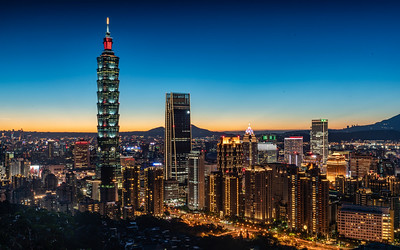
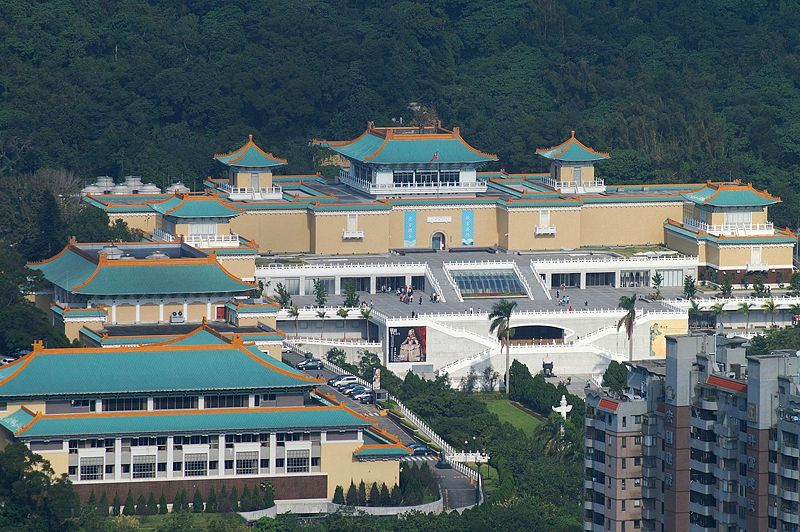
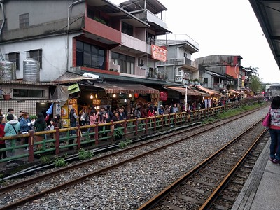
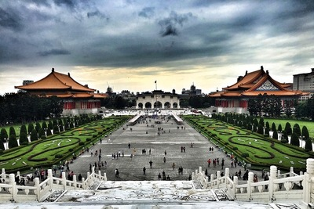

Taipei 101

Taipei 101, a huge skyscraper that was once the tallest building when it was built in 2004 and designed by C.Y. Lee. This building has 101 floors but not each floor is for sight seeing. Some of the floors have malls and stores for you to visit. However, some are for business purposes. Each year, during the New Year, people will set off fireworks from the building. People from Taiwan gather around the building just to see the view. This is a sight that you must see if you ever have the chance to visit Taipei.
National Palace Museum

On seeing the name you must have guessed that it is a museum built like a palace. In fact, you're right. It's appearances is designed after the looks of the Forbidden City in China In addition, this museum also has nearly 700,000 pieces of Chinese artifacts and artworks. However, not all of them are out for display. After a period of time, they change the artifacts to display. These artifacts were brought to Taiwan when the Kuomintang political party retreated to Taiwan. If you are interested in Chinese history and their arts, this is the place you are looking for.
Shifen Old Streets

This is a street located in PingXi of Taipei. This place was orignally built for transporting coal when the Japanese colonized Taiwan. If you want to find a place where is close to nature and also wants some traditional snacks this is the place. The old street is also close to the Shifen Waterfall. In addition, it is also a tradition to release flying lanterns to the sky. You can write you wishes on the lantern and hope that they can be realized. Don't worry. When the lanterns land, whatever is left will be recycled by the merchants!
Chiang Kai-shek Memorial Hall

This is a famous memorial hall built for Chuang Kai-shek who was the first president of Taiwan when he died. It's design is based on Chinese culture. Nowadays, the location is used for large art activities or military displays. It is also known as a place for Taiwan's democracy.